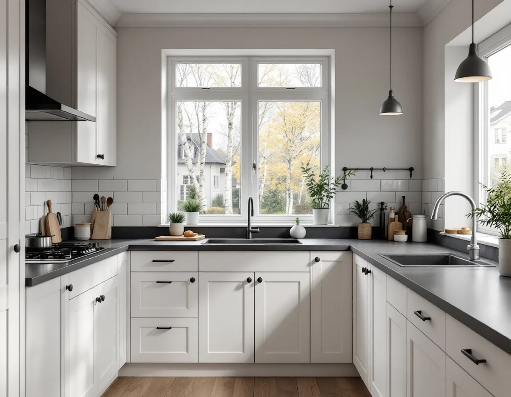
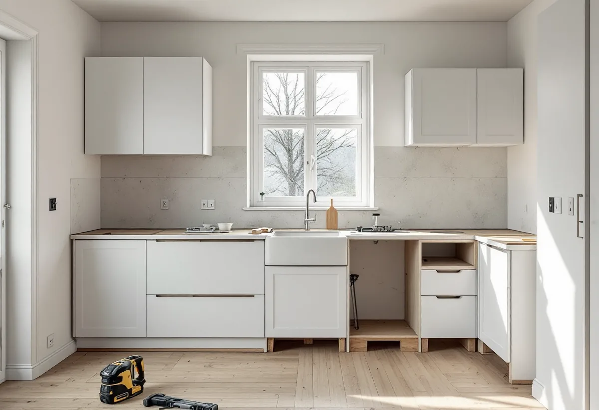

Besök och mätning
Vi går igenom köket, stammen, frånluften och väggarna och mäter upp rummet.
Sollentuna har både villor från villastadens första tid och stora radhusområden från 1960-talet och framåt. Ett kök i en sekelskiftesvilla och ett kök i en radhuslänga kräver olika förarbete, och kommunen har tydliga regler för när ventilation, avlopp och väggar ska anmälas. Vi börjar med ett gratis platsbesök och ett skriftligt kostnadsförslag.

Enligt Sollentunas översiktsplan började småhus och villor byggas i början av 1900-talet när stationerna i Tureberg och Norrviken anlades, och kommunen vill bevara den prägel av villastad som växte fram under seklets första hälft. Köken i de husen har ofta byggts om flera gånger, och det gamla läget kan skymta fram i form av en igensatt kanal eller ett flyttat avlopp.
Från 1960-talet till början av 1980-talet byggdes större radhusområden i flera delar av kommunen. I en länga är köken ofta likadana, och originalköken är i dag så gamla att stommen, bänkskivan och elen ofta behöver bytas samtidigt.
Översiktsplanen säger också att radhus och sammanhållna grupper kan förändras, men att varje ändring ska bidra till helheten. För köket handlar det främst om det som syns utifrån: en ny fläkthuv i fasaden eller ett nytt fönster mot gatan.

Sollentuna kommun har en sida för varje åtgärd. Om ventilation skriver kommunen att anmälan krävs för ett nytt ventilationssystem eller en större ändring av det befintliga, till exempel byte av aggregat, fläkt eller kanaler. Kommer aggregat eller kanaler på fasaden kan det dessutom krävas bygglov.
För vatten och avlopp gäller anmälan när en anläggning installeras eller ändras i större omfattning, och vid stambyte som påverkar stammarna, konstruktionen eller planlösningen. Att riva en bärande vägg eller göra ingrepp i bjälklag kräver anmälan och startbesked med plan- och sektionsritning, konstruktionsritningar och förslag till kontrollplan.
Kommunen anger en handläggningstid på ungefär två till fem veckor för bärande konstruktion och två till fyra veckor för ventilation och VA, och skriver att den just nu kan vara längre. Vi lägger därför in anmälan tidigt i tidplanen, så att rivningen kan börja när startbeskedet har kommit.
I ett radhus från 1970-talet är utrymmet för köket givet av längans mått, och i hus som byggts lika går stammen ofta i samma läge. Därför lönar det sig att behålla diskbänken där den är och lägga arbetet på stomme, bänkskiva och belysning.
Vill du öppna mot vardagsrummet är det väggens funktion som avgör. Kommunen tipsar om att äldre ritningar finns gratis i bygglovsarkivet, och de visar ofta hur bjälklaget är upplagt. En konstruktör kontrollerar ändå väggen på plats, eftersom huset kan ha ändrats sedan ritningarna gjordes.
Många passar på att göra om badrummet i samma veva, eftersom stammen ofta är lika gammal – se badrumsrenovering i Sollentuna. Ska listverk och dörrar anpassas efter det nya köket gör vi det i samma entreprenad, se snickare i Sollentuna.
I en äldre villa kan köket vara ett eget rum med dörr, och huset kan ha en skorsten med kanaler som inte längre används. Ska en köksfläkt kopplas till en befintlig kanal måste den klara uppgiften, och ändras systemet krävs anmälan. Ibland är det enklare att dra en ny kanal genom taket.
Kommunen hänvisar på sidan om kulturhistoriska byggnader till ett kartlager med områden i kulturmiljöplanen. Inne i huset påverkar det sällan köket, men ett nytt fönster, en dörr mot trädgården eller en fläkthuv på fasaden kan behöva prövas.
I en villa med flera våningar kan även bjälklaget över köket behöva kontrolleras om tunga skåp eller en ny kanal ska fästas i taket. Ska en ny kanal ut genom taket tar vi med genomföringen och plåten runt den, se takläggare i Sollentuna.
Vi går igenom köket, stammen, frånluften och väggarna och mäter upp rummet.
Äldre ritningar hämtas ur bygglovsarkivet, och vid behov bedömer en konstruktör väggen.
Du får ett skriftligt kostnadsförslag, och vid behov skickas anmälan in i god tid.
Den gamla inredningen tas bort, och el, vatten, avlopp och fläktkanal förbereds.
Stommen monteras, bänkskivan mäts in och kakel eller stänkskydd sätts upp.
Vitvaror ansluts, belysning provas och du får dokumentationen från arbetet.
I ett småhus ger det rotavdrag att montera fast köksinredning och installera vitvaror i samband med en omfattande renovering, att byta och reparera köksluckor och att sätta kakel och klinker, enligt Skatteverket. Avdraget är 30 procent av arbetskostnaden med ett tak på 50 000 kr per person och år, och högst 75 000 kr tillsammans med rutavdrag.
Själva skåpen och vitvarorna räknas som material. Vi drar avdraget direkt på fakturan.
Om diskbänk och spis kan stå kvar, om en vägg ska öppnas med balk, om elen behöver moderniseras och om en ny kanal ska dras genom taket. Därefter avgör val av stomme, bänkskiva och vitvaror. Efter ett gratis platsbesök får du ett skriftligt kostnadsförslag.
Planering, el, VVS, fläkt och väggar.
Köksrenovering i Stockholm →Takbyte, takbesiktning och plåtarbeten.
Takläggare i Sollentuna →Norrviken, Tureberg och Edsberg.
Takrenovering i Sollentuna →Radhus, villa och en extra bostad.
Attefallshus i Sollentuna →Tillbyggnad, tomtdelning och lov.
Byggföretag i Sollentuna →Ny kulör och lov i villastaden.
Fasadmålning i Sollentuna →Buller, ljudglas och radhus i Sollentuna.
Fönsterbyte i Sollentuna →Täta gamla fönster med ventilationen i åtanke.
Fönsterrenovering i Sollentuna →Radhus i Sjöberg och villor nära stationerna.
Golvläggare i Sollentuna →Massivt trä eller lamell – vad går att slipa.
Golvslipning i Sollentuna →Villastad, radhus och ventilationen.
Badrumsrenovering i Sollentuna →Villor och radhus i Sollentuna.
Fasadrenovering i Sollentuna →Villor och radhus i Sollentuna.
Målare i Sollentuna →Radhusplåt, bleck och rännor i Sollentuna.
Plåtslagare i Sollentuna →Altaner, uterum och bryggor.
Snickare i Sollentuna →Ansökan, solceller och radhus.
Takbyte i Sollentuna →Ny tapet efter prov av väggen.
Tapetsering i Sollentuna →På höjden, nya byggregler och ritningar.
Tillbyggnad i Sollentuna →